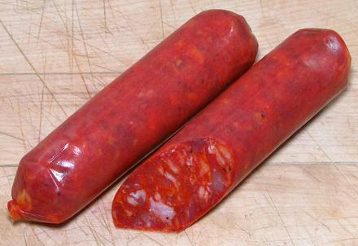

Chorizo Bilbao

[Spain - Basque Region | Philippines]
This is the semi-cured cooking chorizo most available in North America,
especially here in Southern California. There are several North
American manufacturers of both Spanish and Philippine versions.
They can be used interchangeably if necessary, though the Spanish
version has a lot more paprika.
This style of semi-cured sausage originated in the Basque region
of northern Spain. It's mildly spicy, and excellent in stews, soups,
paella and with rice or lentils. It can be sliced and holds its
shape well when wet cooked.
The photo specimens were made by
La Espanola Meats Harbor City, California, 1.2 inches
diameter, 4-3/4 inches long and weighed 2.7 ounces each. Ingred: Pork,
nonfat milk, dextrose, sea salt, Spanish paprika, spices, garlic,
oleoresin of paprika (color), sodium nitrite, sodium erythorbate,
lactic acid starter culture.
More on Sausages.
Buying:
These sausages can be ordered on-line from
Spanish emporiums, but around here, they are much more conveniently
purchased from the frozen food cases of Philippine markets. We have
one near every major hospital center, because health care in California
runs on Philippine immigrants.
Storing:
The Spanish variety can be kept a few weeks
in it's unopened vacuum package, but should be used within a week or
so after opening. The Philippine ones are always frozen, and will
keep up to a year in the freezer compartment.
Cooking:
Remove the casing (if present) and cut to
size for the recipe. They can tolerate fairly long cooking without
falling apart.
sg_bilbaoz 190117 - www.clovegarden.com
©Andrew Grygus - agryg@clovegarden.com - Photos
on this page not otherwise credited © cg1
- Linking to and non-commercial use of this page permitted